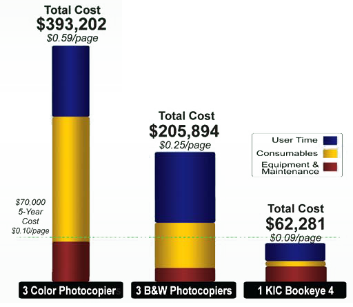
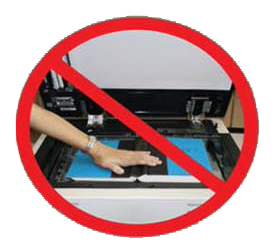

KIC Bookeye vs. Copiers – How KIC Compares
Copiers are Outmoded
Since the first KIC was delivered to an academic library in 2004, the days of photocopiers for patron use in academic libraries and even public libraries were numbered. And now with the rapid explosion of tablet computers and electronic readers, the demand in academic libraries for electronic copies has substantially outstripped the de- mand for printed copies. The demand for electronic copies in public libraries is also reaching a tipping point.
The ability to capture virtually unlimited numbers of pages of research into a tablet or electronic reader and search through that material on the Internet with a tablet, eReader or notebook PC that can be used just about anywhere is highly convenient and immensely valuable. In this digital age, academic libraries are compelled to go hybrid for three reasons: 1) the high demand for digital content; 2) their existing print collections contain vast amounts of information that cannot be found on the Internet; and 3) students are receptive to the price of electronic copies - typically free.
So how do the costs of KIC systems compare with those of photo copiers? There are three main factors that keep the cost of photo- copies high: 1) each copy requires paper, toner and ink; 2) photo- copiers require a lot of maintenance due to the number of moving parts; and 3) all major photocopier brands use a distributed service model.
In contrast, these costs are lower for KIC because KIC has split the scan/copy functions into three separate machines, choosing the best of breed for each. As a result, KIC offers the best book scanners by themselves or with a loose-leaf paper (ADF) scanner. Virtually any off-the-shelf laser or inkjet printer can be added to any KIC system, so you can optimize costs and speeds, and offer affordable color.

KIC Bookeye 4 Scanners vs. Copiers
This graph compares the total costs of one color KIC Bookeye 4 system with three color copiers and with three black and white copiers. Both copiers are the kinds typically seen in academic libraries. One KIC Bookeye 4 is compared with three copiers because its face-up operation yields well over two times the performance of a typical copier. The costs are broken into three main areas: equipment and maintenance, consumables, and patron usage time. With KIC, electronic output is assumed to be preferred over print 90% of the time. That ratio has ranged from 75-95% electronic in 2012, but is certain to rise in the future
 A five Year Comparison at aUsage Rate of 150,000 pages per year The KIC numbers above represent a five-year saving in excess of $143,000!
No More Book Spine Damage!
Thick books with stiff spines and content that runs deep into the bookfold are often damaged when copied. KIC Bookeye 4 easily captures content without damaging book spines.
KIC automatically removes black edges, straightens content, and produces clean, professional looking images – important for electronic reserves, course curriculum materials and research reports. These automatic image treatment functions also save a lot of administrator, faculty, and student time.
Thick Books...No Problem
KIC Bookeye 4 handles thick books beautifully. Its contourfinding laser allows it to flatten even the most curved books and produce text that is clear and undistorted. KIC automatically adds margins for print-ready image quality.
KIC Bookeye Scans 3 Times Faster
Statistics from five million scanning sessions across America revealed a median session length of 23 pages. So, most of the time spent during a KIC session is spent scanning. Face up scanning has been proven to be three times faster than face down scanning. So why is speed so important
- It's economical. One KIC Bookeye can replace multiple copiers or other face-down scanning machines.
- It gives patrons another reason to visit your library.
- It's green. The faster it is, the more use it will get and the less the copier will be used.
Color Images are Free
In the digital world, there is no paper, toner or ink, so libraries rarely charge for images, whether black and white or color.
Color Copies for Less
Over the years, many libraries experimented with color copiers, but could never find a formula that worked. If the fees were low, patrons would copy materials with so much color that the library would spend more on ink than the fees they were collecting. If the fees were too high, the usage would be so low that the cost of the machine couldn't be justified.
KIC calculates the amount of color in an image before it is printed. So the fee for copies with a little bit of color can be the same as the fee for black and white copies. If a copy has a lot of color, the fee can be increased in proportion to the cost of the color ink or toner. This wonderful feature should be a simple, easy byproduct of the digital age, and it is with KIC.